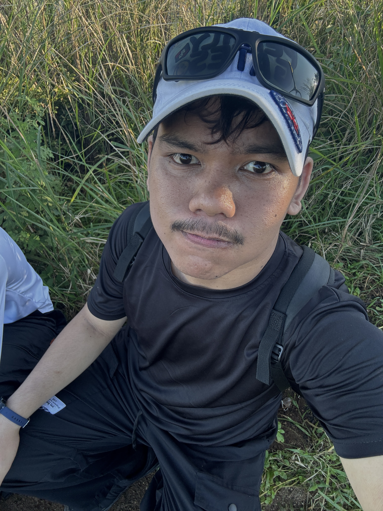
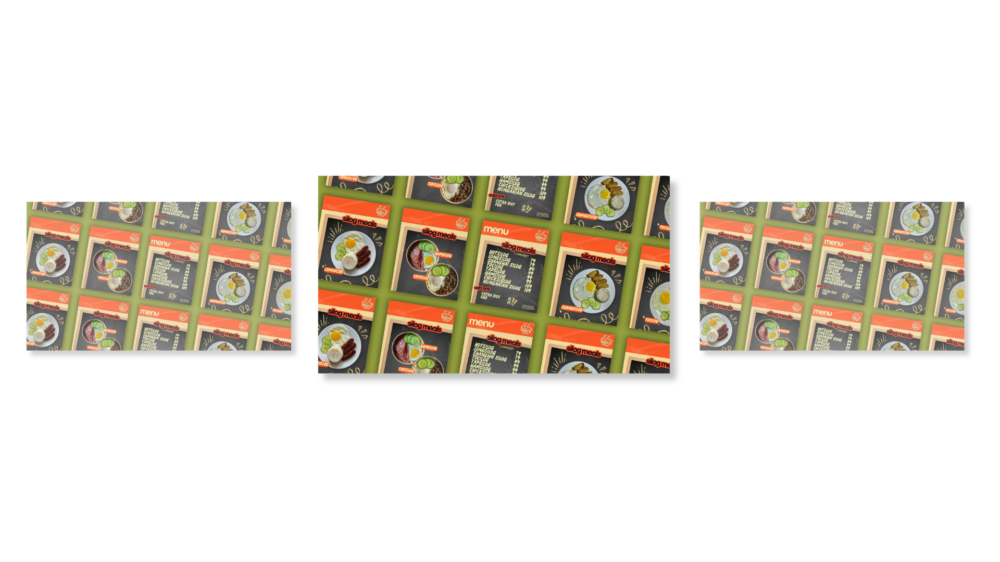
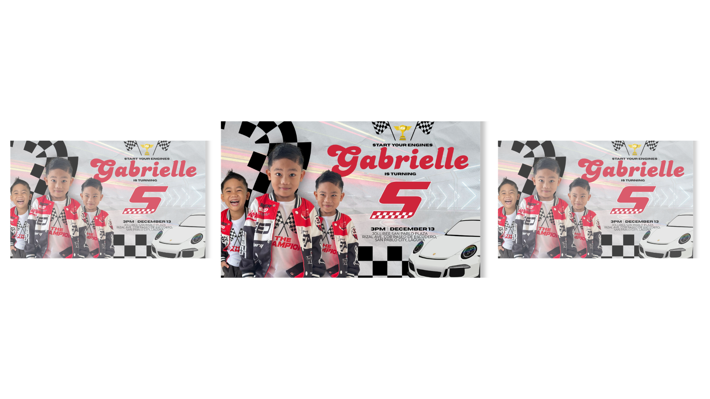
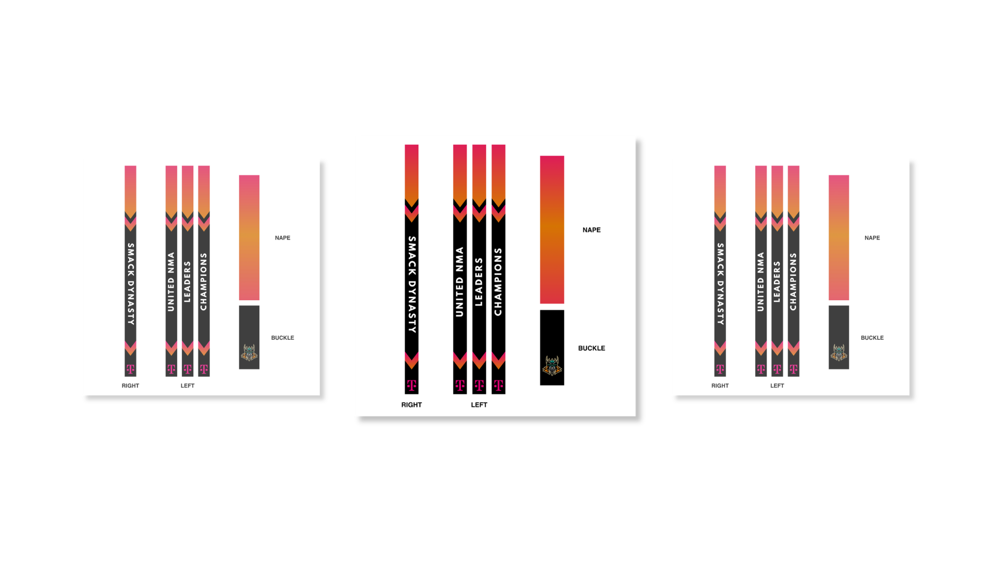

Exploration is the way that we discover where we truly belong. — Walt, Moonshot (2022)
Hi everyone! I'm Angelo, but feel free to call me Gelo. I'm a third-year Bachelor of Arts in Multimedia Studies student at the University of the Philippines Open University, currently balancing full-time work, studies, and enjoying life along the way.
I enjoy coffee, good food, working out, and music. I also occasionally do junk journaling as a way to take a break from screen time. Beyond that, I love exploring and immersing myself in different forms of media.
Through this website, I hope to share a little about who I am, what I enjoy, and the little things that make life more meaningful.
Pleased to meet you!
With love,
Angelo.
Some of my all-time favorites on Letterboxd are Love Untangled (2025), All of Us Strangers (2023), Harry Potter and the Prisoner of Azkaban (2004), and The Hunger Games: Catching Fire (2013).
I enjoy exploring different genres of music. My favorites include SZA, Ariana Grande, Cup of Joe, Maki, and Stray Kids. I also have a soft spot for yearning songs.
I love exploring fonts, colors, visual styles, and creative inspiration. I've been exploring graphic design for almost a decade.
Ever since high school, I've always been interested in graphic design. I used to experiment with PicsArt, look for inspiration on Pinterest, explore graphic design websites, and browse font websites. I was introduced to graphic design at an early age, and I hope to pursue it professionally in the future.
Designed a series of social media posters for Percylog in January 2026, exploring visual storytelling, creative layouts, and engaging digital content through graphic design.

Designed a race track-themed birthday poster for my niece's 5th birthday, incorporating playful visuals and vibrant elements to match the celebration's theme.

Designed a unique community lanyard to represent our team and foster a sense of identity and belonging among members during my time at work.
